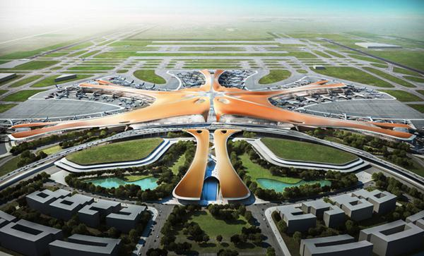
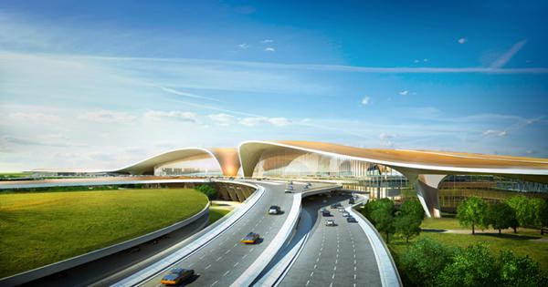

摘要：巴黎机场工程公司(ADPI)联手扎哈·哈迪德建筑事务所共同完成了“北京新机场航站楼”的概念设计，这座航站楼位于大兴，是全球最大的机场客运大楼。本次公布的最新设计方案是在ADPI中标方案的基础上，根据北京新机场建设指挥部(BNAH)的意见修改而来 。基于2011年中标的设计方案，BNAH与竞赛联盟组成员英国Buro Happold工程顾问公司、Mott MacDonald国际咨询公司以及EC Harris建筑资产咨询公司创建了联合设计团队，共同优化概念设计。
目前，北京现有的首都机场已经超过其计划容量，而新的航站楼将服务于这个世界上增长最快的航空部门，使北京与全球的文化，经济和城市中心之间形成进一步联系。首期工程完成后预计年吞吐量将达到4500万人次 ，新机场将会采用更具灵活性和可持续性的方式，能够根据不同的日常航班和客流交通调整不同的配置。此项目还是集成了多种形式的联运中心，设有直达本地和全国铁路网的线路。该方案将成为这一地区不断增长的交通网络的关键枢纽，以及地区经济发展的催化剂。
联合设计团队的方案融合了原先APDI在竞赛阶段的原则和扎哈·哈迪德事务所联盟组的想法，其中包括Pascall+Watson，BURO Happold，Mott Macdonald和EC Harris。在完成概念设计阶段之后，该项目目前正在由BNAH领导下，由中国的设计院团队继续深化。